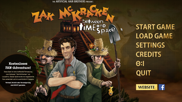
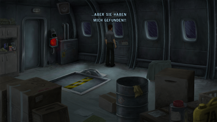
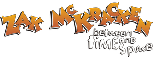

Zak McKracken – Between Time and Space
Dieser Artikel wurde für die folgenden Ubuntu-Versionen getestet:
Ubuntu 16.04 Xenial Xerus
Ubuntu 14.04 Trusty Tahr
Zum Verständnis dieses Artikels sind folgende Seiten hilfreich:
Zak McKracken - Between Time and Space 
 ist ein Point-and-Click-Adventure, welches erstmals 2008 erschienen und seit 2015 als Directors-Cut mit 16:9 Darstellung verfügbar ist. Es handelt sich um ein Fan-Projekt und ist die inoffizielle Fortsetzung des Klassikers Zak McKracken and the Alien Mindbenders aus dem Hause Lucasfilm Games. Während das Original ScummVM benötigt, handelt es sich bei Between Time and Space um eine plattformunabhängige Umsetzung, die neben Linux auch Mac OS X und Windows unterstützt.
ist ein Point-and-Click-Adventure, welches erstmals 2008 erschienen und seit 2015 als Directors-Cut mit 16:9 Darstellung verfügbar ist. Es handelt sich um ein Fan-Projekt und ist die inoffizielle Fortsetzung des Klassikers Zak McKracken and the Alien Mindbenders aus dem Hause Lucasfilm Games. Während das Original ScummVM benötigt, handelt es sich bei Between Time and Space um eine plattformunabhängige Umsetzung, die neben Linux auch Mac OS X und Windows unterstützt.
Im Spiel schlüpft man in die Rolle des Reporters Zak McKracken. Man findet sich als blinder Passagier an Bord einer russischen Frachtmaschine wieder und erwacht genau in dem Augenblick als das Flugzeug von Außerirdischen geentert wird. Am nächsten Morgen erwacht Zak zu Hause in seinem Bett und hält das Erlebte für einen Traum - bis er die Beule an seinem Hinterkopf spürt.
|  |  |
| Hauptmenü | Spielszene |
Installation¶
Das Spielarchiv von der Projektseite  (holarse.de ) herunterladen und entpacken [1] (z.B. unter ~/Spiele). In den neuen Ordner wechseln und über
(holarse.de ) herunterladen und entpacken [1] (z.B. unter ~/Spiele). In den neuen Ordner wechseln und über ./start das Spiel aufrufen [2]. Auf Wunsch einen Menüeintrag [3] vornehmen.
Hinweis:
Zak McKracken - Between Time and Space ist ausschließlich für 64-Bit Architektur verfügbar.
| Menü | |
| Menüpunkt | Beschreibung |
| "Start Game" | Zak starten. |
| "Load Game" | Spielstand laden. |
| "Settings" | Spielsprache ändern und Soundeinstellungen vornehmen. |
| "Credits" | Mitwirkende |
| "O:I" | Trailer zu OAK ISLAND - Some Treasures Are Best Left Buried |
| "Quit" | Spiel verlassen |
Konfiguration¶
Einige erweiterte Einstellungen können nur mit einem Editor [4] vorgenommen werden. Die Datei config.ini ist im Spieleverzeichnis zu finden. Die folgenden Parameter können verändert werden:
| Menü | |
| Parameter | Beschreibung |
FILE = ZakMcKracken2.vis | Datei, welche übergeben wird. Hier: ZakMcKracken2.vis |
FULLSCREEN = yes | Anzeige im Vollbildmodus - no für Fenstermodus verwenden. |
RESOLUTION = desktop | Auflösung des Spiels - mögliche Werte sind Auto, Desktop, Game und ein vom Benutzer definierter Wert z.B. 800x600. |
Hinweis:
Im Fenstermodus sollte die Auflösung angepaßt werden.
Im Wiki von Visionaire Studio sind weitere Parameter zu finden.
Problemlösungen¶
Spielstand¶
Bei Problemen mit gespeicherten Spielständen den Ordner Savegames unter ~/.local/share/Zak2/Zak McKracken - BTAS/ manuell anlegen.
Tastenkürzel¶
| Tastenkürzel | |
| Taste(n) | Funktion |
 | Zu einem Objekt bewegen (kurz)/Mit Objekt interagieren (lang) |
 | Objekte untersuchen. |
| Esc | Menü |
| F5 | Spielstände |
| F8 | Soundsteuerung |
| Spielhinweise | |

Infobox¶
| Zak McKracken - Between Time and Space | |
| Genre: | Adventure |
| Sprache: |  |
| Veröffentlichung: | 2008+ |
| Entwickler: | Artificial Hair Bros. |
| Systemvoraussetzungen: | 3D Grafikkarten-Treiber |
| Medien: | Download |
| Strichcode/EAN/GTIN: | - |
| Läuft mit: | nativ |

- Erstellt mit Inyoka
-
 2004 – 2017 ubuntuusers.de • Einige Rechte vorbehalten
2004 – 2017 ubuntuusers.de • Einige Rechte vorbehalten
Lizenz • Kontakt • Datenschutz • Impressum • Serverstatus -
Serverhousing gespendet von